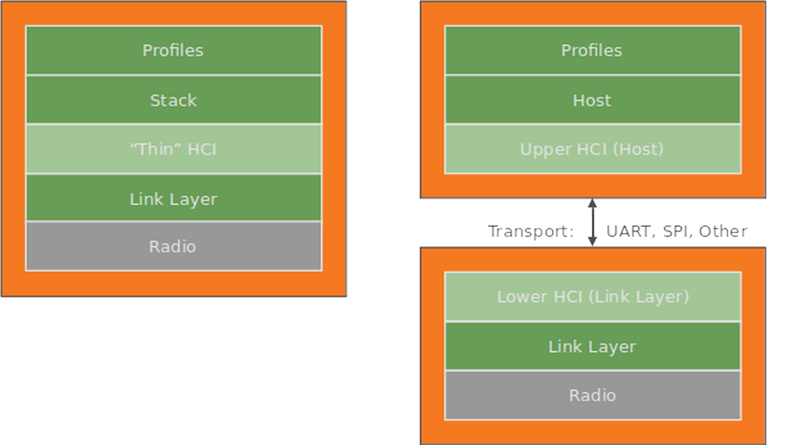
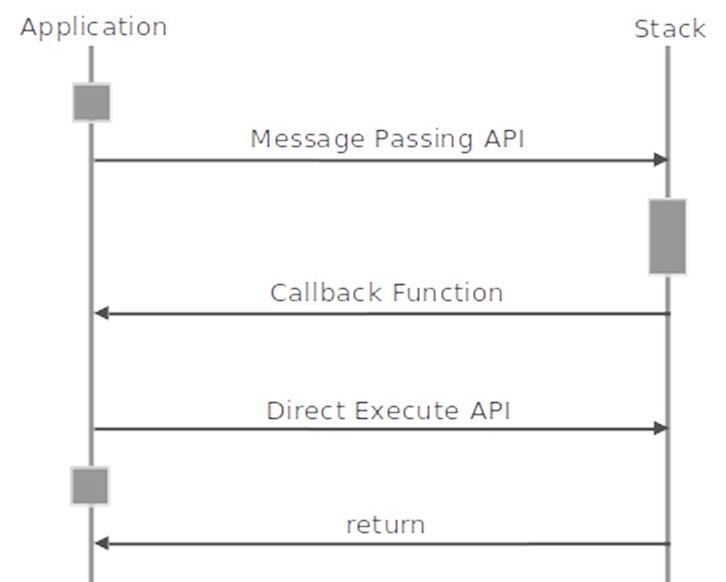
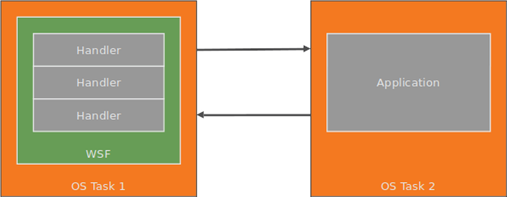
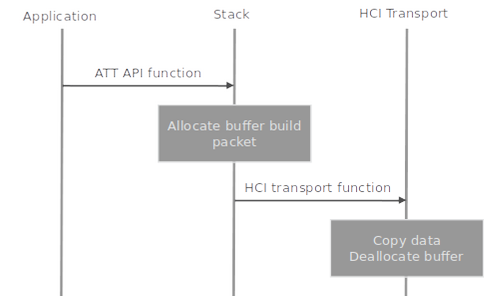
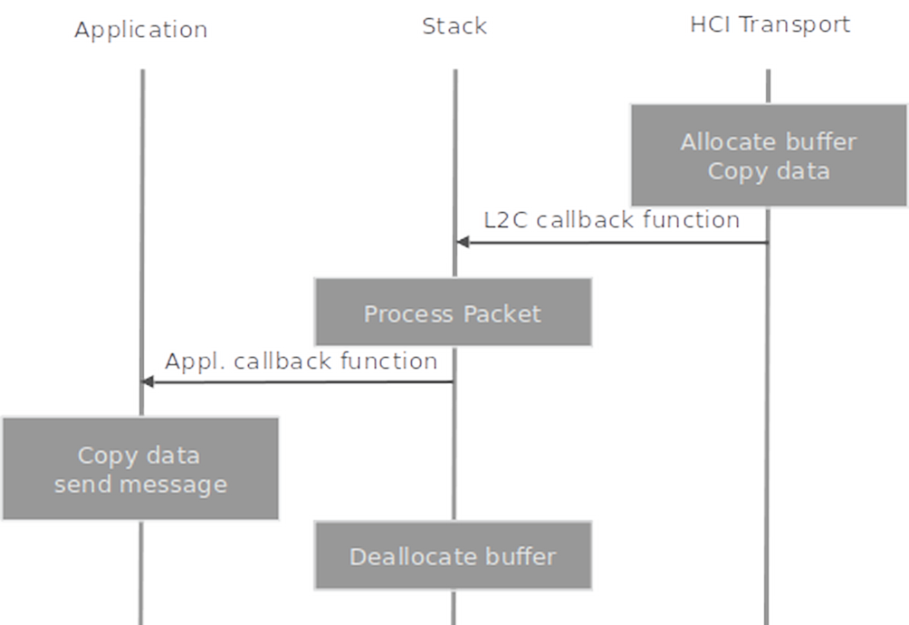

BLE Profile Developer’s Guide
Introduction
This document is the Developer’s Guide for the em | bleu Profile software. This component implements the Bluetooth Low Energy Profile and Services features.
Audience
This book is written for experienced software engineers who might or might not have experience with em | bleu products. Such engineers typically have experience writing Bluetooth applications but might have limited experience with em | bleu software. The reader is assumed to have embedded C software experience.
Abbreviations
Definitions of abbreviations used in this document are listed below:
ACL: Asynchronous Connectionless data packet
AD: Advertising Data
ARQ: Automatic Repeat reQuest
ATT: Attribute Protocol, also attribute protocol software subsystem
ATTC: Attribute Protocol Client software subsystem
ATTS: Attribute Protocol Server software subsystem
BIG: Broadcast Isochronous Group
BIS: Broadcast Isochronous Stream
CCC: Client Characteristic Configuration
CCCD: Client Characteristic Configuration Descriptor
CID: Connection Identifier
CIS: Connected Isochronous Stream
CSRK: Connection Signature Resolving Key
DM: Device Manager software subsystem
GAP: Generic Access Profile
GATT: Generic Attribute Profile
HCI: Host Controller Interface
IRK: Identity Resolving Key
JIT: Just In Time
L2C: L2CAP software subsystem
L2CAP: Logical Link Control Adaptation Protocol
BLE: Bluetooth Low Energy
LL: Link Layer
LLCP: Link Layer Control Protocol
LTK: Long Term Key
MITM: Man In The Middle pairing (authenticated pairing)
OOB: Out Of Band data
SMP: Security Manager Protocol, also security manager protocol software subsystem
SMPI: Security Manager Protocol Initiator software subsystem
SMPR: Security Manager Protocol Responder software subsystem
STK: Short Term Key
WSF: Wireless Software Foundation software service
References
The following documents are referenced by this document.
1: Bluetooth SIG, “Bluetooth Core Specification”, Version 5.4, January 31, 2023.
System Context
The BLE Host software system consists of two main components:
em | bleu Host Host
em | bleu Profiles Profiles
The software system is dependent on WSF and PAL. WSF is an OS porting layer. It provides general-purpose software services such as queues, timers, and buffer management. PAL is the hardware platform abstraction layer. It provides the platform specific implementation to the hardware’s BSP libraries.
System Configuration
The Host and Profiles are designed to support single-chip SoC systems and dual-chip systems.
When operating in a single-chip system the Host and Profiles run on the processor inside the SoC. A “thin” HCI layer adapts to the software interface of the target’s BLE Link Layer.
When operating in a dual-chip system the Host and Profiles run on a microcontroller and communicate with a BLE Controller chip over a wired interface such as UART or SPI. A standard transport-based HCI layer manages the communication between the two devices.
{kind=link}
Figure 2-1. Host and Profiles in a single-chip SoC system and dual-chip system.
em | bleu Profiles
Profiles consists of Sample Application, interoperable Bluetooth Profiles and Services components and an Application Framework for simplified application development and porting.

Figure 2-2. Profiles software system.
For more information see em | bleu Profile Developer’s Guide.
Sample Applications
em | bleu’s Bluetooth Low Energy sample applications provides example source code for products such as a proximity keyfob, health sensor, and watch. The sample applications are designed with a product-oriented focus, with each application supporting one or more BLE profile. The sample applications interface to the Profiles and Services and the Application Framework.
Profiles and Services
The profiles and services are interoperable components designed to Bluetooth profile and service specification requirements. The profiles and services are used in applications to implement particular profile and service features.
The profiles are implemented in separate files for each profile role. The services, however, may be grouped together in files based on their logical function and the profile they are used by.
Application Framework
The Application Framework performs many operations common to BLE embedded applications, such as:
Application-level device, connection, and security management.
Simple user interface abstractions for button press handling, sounds, display, and other user feedback.
An abstracted device database for storing bonding data and other device parameters.
{kind=link}
Figure 2-3. Application Framework software subsystem.
The Application Framework consists of several modules, each with their own API interface file:
Main: Device, connection, and security management.
UI: User interface abstraction.
DB: Device database.
HW: Hardware sensor interface abstraction.
em | bleu Host
The Host is complete host protocol stack solution for single-mode BLE devices. It consists of five protocol layers:
ATT: Attribute protocol.
SMP: Security manager protocol.
L2C: L2CAP protocol.
HCI: Host controller interface protocol.
DM: Device manager.
{kind=link}
Figure 2-4. Host software system.
ATT
The ATT subsystem implements the attribute protocol and generic attribute profile (GATT). It contains two independent subsystems: The attribute protocol client (ATTC) and attribute protocol server (ATTS).
ATTC implements all attribute protocol client features and is designed to meet the client requirements of the generic attribute profile. ATTC can support multiple simultaneous connections to different servers.
ATTS implements all attribute protocol server features and has support for multiple simultaneous client connections. ATTS also implements the server features defined by the generic attribute profile.
SMP
The SMP subsystem implements the security manager protocol. It contains two independent subsystems:
The initiator (SMPI). SMPI implements the initiator features of the security manager protocol and has support for multiple simultaneous connections.
The responder (SMPR). SMPR implements the responder features of the security manager protocol and has support for only one connection (by Bluetooth specification design).
SMP also implements the cryptographic toolbox, which uses AES. The interface to AES is asynchronous and abstracted through WSF. SMP also implements functions to support data signing.
L2C
The L2C subsystem implements the BLE L2CAP protocol. It is a substantially scaled-down version of regular Bluetooth L2CAP.
In the TX data path, the main function of L2C is building L2CAP packets and sending them to HCI. In the RX data path, its main function is receiving packets from HCI and routing them to either SMP or ATT.
L2C also implements the connection parameter update procedure.
HCI
The HCI subsystem implements the host-controller interface specification. This specification defines commands, events, and data packets sent between a BLE protocol stack on a host and a link layer on a controller.
The HCI API is optimized to be a thin interface layer for a single chip system. It is configurable for either a single chip system or traditional system with wired HCI.
This configurability is accomplished through a layered implementation. A core layer can be configured for either a single chip system or wired HCI. A transport and driver layer below the core layer can be configured for different wired transports such as UART.
DM
The DM subsystem implements device management procedures required by the stack. These procedures are partitioned by procedure category and device role (master or slave). The following procedures are implemented in DM:
Advertising and device visibility: Enable/disable advertising, set advertising parameters and data, set connectability and discoverability.
Scanning and device discovery: Start/stop scanning, set scan parameters, advertising reports, name discovery.
Connection management: Create/accept/remove connections, set/update connection parameters, read RSSI.
Security management: Bonding, storage of security parameters, authentication, encryption, authorization, random address management.
Local device management: Initialization and reset, set local parameters, vendor-specific commands.
DM procedures support the Generic Access Profile (GAP) when applicable.
WSF
The Wireless Software Foundation (WSF) is a simple OS wrapper, porting layer, and general-purpose software service used by the software system. The goal of WSF is to stay small and lean, supporting only the basic services required by the stack. It consists of the following:
Event handler service with event and message passing.
Timer service.
Queue and buffer management service.
Portable data types.
Critical sections and task locking.
Trace and assert diagnostic services.
Security interfaces for encryption and random number generation.
For more information see the WSF Developer’s Guide.
Architecture
This section describes the software architecture used by the em | bleu Host.
Interfaces
The software system uses function calls and callback functions in its APIs, as described below.
Message Passing API Functions
Message passing API functions result in a message being sent to the task running the stack. These functions typically involve a complex operation, such as creating a connection, and do not access internal (private) data.
Direct Execute API Functions
Direct execute API functions run entirely in the context of the calling function. These functions typically involve simple operations like reading or setting internal data. Task scheduling is locked when accessing internal data.
Callback Functions
Callback functions are implemented by the client using the protocol stack and execute in the context of the stack.
Callback functions are used to send events and data to the client.
{kind=link}
Figure 3-1. Message passing and direct execute interfaces.
Event Handlers and Tasks
The em | bleu software system defines an event handler service that forms a basis for the asynchronous communication mechanisms used in the system. An event handler can receive messages and events. Each software subsystem typically has its own event handler; for example, each layer of the protocol stack has its own event handler.
The stack is designed to be flexible and allow for different task architectures. The software system does not define any tasks but defines some interfaces to tasks. It relies on the target OS to implement tasks and manage the timer and event handler services from target OS tasks. A typical single-chip software system will use separate tasks for the application, stack, and link layer. However there is nothing in the design of the protocol stack or profiles that prevent them from being run in the same task as other software systems.
{kind=link}
Figure 3-2. Example system showing event handlers executing within an OS task
Data Path
This section describes the data flow between applications and the HCI.
TX Path
The TX data path covers the flow of data as it is sent from the application, through the stack, and then on to HCI.
When copying there can be two data copies in the TX data path:
When data is sent from the application to the stack
When data is sent from the stack to HCI
As an optimization the stack provides zero-copy APIs that use a single data buffer between the application and stack. A zero-copy API is also utilized between the stack and HCI when running on a single CPU architecture.
The stack does not copy data internally between layers.
The allocation and deallocation of data buffers takes place at the point where data is copied. When the application sends data to the stack, a buffer is allocated and data is copied to the buffer.
When data is sent from the stack to the HCI or the link layer, the data is copied to an HCI or link layer buffer and the stack buffer is deallocated.
{kind=link}
Figure 3-3. TX data path
In this scenario, the application calls an ATTC API function which initiates transmission of a packet. The ATTC function allocates a buffer and builds an attribute protocol packet, while reserving space at the start of the packet for the L2CAP and HCI headers. ATTC looks up the HCI handle for this instance and calls an L2C function, passing the handle along with the packet and packet length to L2C.
L2C checks that the link for this handle is connected. If it is not, L2C discards the packet.
Note: It is OK to silently discard the packet in this race condition because ATTC will be notified immediately afterwards that the link has been disconnected.
L2C then builds the L2CAP and HCI headers for the packet and calls an HCI function to send the packet to HCI.
HCI then processes the packet. The detailed operation of HCI depends on the system configuration. In general HCI will copy the data, deallocate the buffer, and queue the data.
RX Path
The RX data path covers the flow of data as it is sent from HCI, through the stack, and then on to the application. Like the TX path, there can be two data copies in the RX data path: when data is sent from the stack to the application and when data is sent from HCI to the stack. The stack does not copy data internally between layers.
Buffers are allocated by the HCI layer and then deallocated internally by the stack.
{kind=link}
Figure 3-4. RX data path
HCI receives a data packet. It allocates a WSF buffer and copies the entire data packet, including the HCI handle and length, to the buffer. Then HCI calls an L2C callback function to send the data to L2C.
L2C receives the packet and performs some basic error checking on the length and PSM. If there is an error the packet is discarded and the buffer is deallocated. If the packet is good it is routed to either ATT or SMP. In this example the packet is routed to ATT and L2C calls an ATT callback function.
ATT receives the packet and performs error checking on the length and the attribute opcode. If there is an error the packet is discarded and the buffer is deallocated. If the packet is good it is routed to either ATTC or ATTS. In this example the packet is routed to ATTS and ATT calls an ATTS callback function.
ATTS processes the received packet according to the attribute protocol specification. In this example, the packet is passed to the application for further processing. ATTS calls the application callback function which allocates a WSF message buffer, copies data to the buffer, and sends the message to the application task. After calling the application callback function ATTS deallocates the packet buffer.
Folder Organization
The contents of the root directory are listed in the table below:
Directory |
Description |
|---|---|
ble-host |
Host software |
ble-profiles |
Profiles platform and sample projects |
platform |
Platform integration and example source |
projects |
sample applications |
wsf |
Wireless Software Foundation |
ble-apps folder
The contents of the ble-apps directory are listed in the table below:
Directory |
Description |
|---|---|
build |
Build configuration / Makefiles |
sources |
Application source |
The build and sources directories contain the sample applications makefiles and source code respectively.
Directory |
Description |
|---|---|
assettag |
Asset tracking tag sample application |
cycling |
Cycling sensor sample application |
datc |
Proprietary data transfer client sample application |
dats |
Proprietary data transfer server sample application |
fit |
Fitness sensor sample application |
gluc |
Glucose sensor sample application |
hidapp |
HID sample application |
locator |
Proprietary asset tracking locator sample application |
medc |
Health data collector sample application |
meds |
Health sensor sample application |
sensor |
Sensor sample application |
tag |
Proximity tag sample application |
uribeacon |
Uribeacon sample application |
watch |
Watch sample application |
ble-host folder
The contents of the ble-host directory are listed in the table below:
Directory |
Description |
|---|---|
build |
Build configuration / Makefiles |
include |
Host API |
sources/hci |
Host HCI source |
sources/sec |
Host security support (AES, ECC) |
sources/stack |
Host stack source |
ble-profiles folder
The contents of the ble-profiles directory are listed in the table below:
Directory |
Description |
|---|---|
build |
Build configuration / Makefiles |
include |
Profiles API |
sources/af |
Application framework and sample applications |
sources/profiles |
BLE profiles |
sources/services |
BLE services |
The profiles directory contains the BLE profiles.
Directory |
Description |
|---|---|
anpc |
Alert Notification Profile client |
atpc |
Asset Tracking profile client |
atps |
Asset Tracking profile server |
bas |
Battery Service server |
blpc |
Blood Pressure Profile client |
blps |
Blood Pressure Profile server |
cpp |
Cycling Power Profile server |
cscp |
Cycling Speed and Cadence Profile server |
dis |
Device Information Service client |
fmpl |
Find Me Profile locator |
gap |
GAP Profile |
gatt |
Generic Attribute Profile client |
glpc |
Glucose Profile client |
glps |
Glucose Profile server |
hid |
HID device |
hrpc |
Heart Rate Profile client |
hrps |
Heart Rate Profile server |
htpc |
Health Thermometer Profile client |
htps |
Health Thermometer Profile server |
paspc |
Phone Alert Status Profile client |
plxpc |
Pulse Oximeter Profile collector |
plxps |
Pulse Oximeter Profile sensor |
rscp |
Running Speed and Cadence Profile sensor |
scpps |
Scan Parameter Profile server |
sensor |
Example Temperature and Gyroscope Service Profile |
tipc |
Time Profile client |
udsc |
User Data Service Collector |
uribeacon |
Uribeacon Configuration Profile |
wdxc |
Proprietary Data Exchange Client Profile |
wdxs |
Proprietary Data Exchange Server Profile |
wpc |
Packetcraft proprietary profile client |
wspc |
Weight Scale Profile client |
wsps |
Weight Scale Profile server |
The services directory contains the BLE services.
Directory |
Description |
|---|---|
svc_alert |
Example Alert-related services implementation |
svc_batt |
Example Battery service implementation |
svc_bps |
Example Blood Pressure service implementation |
svc_core |
Example GATT and GAP service implementations |
svc_cps |
Example Cycling Power Service Server implementation |
svc_cscs |
Example Cycling Speed and Cadence Service Server implementation |
svc_cte |
Example Constant Tone Extension Service implementation |
svc_dis |
Example Device Information Service implementation |
svc_gls |
Example Glucose service implementation |
svc_gyro |
Example gyroscope sensor service implementation |
svc_hid |
Human Interface Device service implementation |
svc_hrs |
Example Heart Rate service implementation |
svc_hts |
Example Health Thermometer service implementation |
svc_ipss |
Example Internet Profile Support Service implementation |
svc_plxs |
Example Pulse Oximeter Service Server implementation |
svc_px |
Example Proximity services implementation |
svc_rscs |
Example Running Speed and Cadence Service Server implementation |
svc_scpss |
Example Scan Parameter Service Server implementation |
svc_temp |
Example temperature sensor service implementation |
svc_time |
Example Time-related services implementation |
svc_uricfg |
UriCfg configuration service implementation |
svc_wdxs |
Wireless Data Exchange service implementation |
svc_wp |
WP service implementation. Packetcraft proprietary servicde |
svc_wss |
Example Weight Scale service implementation |
Porting
The porting process typically consists of two main steps:
Porting WSF interfaces and services to the target OS and software system.
Porting HCI to the target system and writing a transport driver, if applicable.
WSF Porting
Consult the WSF Developer’s Guide for WSF porting.
Refer to Figure 7-1 WSF porting process to a target system for more details.
HCI Porting
The HCI layer is designed to be portable and support different transport and chip configurations. The porting process depends on the chip configuration:
If the stack is ported to a single-chip system then a “thin HCI” porting process is used.
If the stack is ported to a two-chip system with wired HCI transport then a transport-based porting process is used.